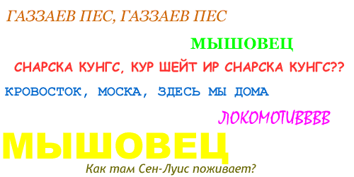

Кубок Колотиловки Акопян Амаяк
Мудрость. Не сломайте шею, коли собрались "разворотить клювик".
Матчи еще не начались, а пиздешь уже льется рекой. Такое возможно только здесь. Да-да, вы не ошиблись вы на сайте Кубка Колотиловки.
Чтобы не отгладывать дела в долгий ящик сразу приступим к делу. Спасибо за "осуществление открытого обращения" ко мне, оч. приятно, честно. Осуществили, по-другому и не скажешь. Правда, играя против друг друга вот уже столько раз (читай лет) можно было бы и имя уже выучить. Ан нет, ну да ладно. Хотя с памятью шутки плохи, это вам доктор Курпатов подтвердит. Так что вам сюда.
Давайте разбирать ваш поток сознания. Столько каши, столько нелепицы, что только теперь понимаешь, почему за годы среднего образования вы сменили ни одну, ни две и даже не три школы.
Ваша фраза. Судя по всему, прошлый КК вас ничему не научил...
Чему должен был меня научить прошлый КК? А позапрошлый? А двухлетней давности? Специально для вас открою тайну, что наш клуб не ставит (и никогда не ставил) перед собой задачи выиграть КК. Бороться в каждом матче - да, играть на победу - да, повторить свое лучшее достижение (третье место) - опять да, но никак не выиграть. Для нас главное - не попасть в хуевой финал, а остальное - как карта ляжет, которая не территория. И не забывайте включать голову - очень мудрый совет был дан вам однажды. Не так ли?
... и вы снова с белой массой в уголках рта источаете ничем не подкреплённые амбиции, уповая на выращенных чужими руками дорогостоящих футболистов и собственный дубль, который "обыгрывают всего лишь со счётом 1:0".
В вашей команде не играет ни одного дорогостоящего легионера? Как же так? Наверное, специально для вас необходимо пояснение слова "дорогостоящий" – стоящий больших денег. Так ли? А посему давайте вспомним ваши дела минувших дней, а именно 28.08? Что же там было? Никак не покупка игрока Alberto Dominguez из Panucci`s Pizza 520 750 Lats? Ну что вы...Это 28 августа. А 01.07 приобретен Osvaldo Alvarez из IERUS за 451 500 Lats. Не так ли? А если вы намекаете на Kazuyuki Hamaguchi из The laughing ma, то его трансфер нам обошелся всего в 115 000 Lats. Очень жаль, что вы, Албинс Зандманс, в очередной раз не узрели истины. Быть может виною всему та порция бобов, которая каждый вечер бесследно растворяется под покровом ночи. Подумайте об этом.
В.Ф. Опять же, волна пиздежа, которую вы подняли сразу после того, как волей жребия меня лишили шанса разворотить вам клювик во второй раз в двух матчах, вынуждает меня предложить вам пари. Честное во всех отношениях, ведь мы находимся в равных условиях и играем на групповом этапе с одними и теми же командами. Итак, я предлагаю вам спор на то, кто из нас наберёт меньше очков на групповом этапе. Ставка на ваш выбор - 50 латвийских денежных единиц или публичное съедение столовой ложки собачьего говна. У вас есть три варианта:
Жду вашего скорейшего ответа.
Ну вот мы дошли и до главного вопрос-ответа. Вы были так любезны, что предоставили мне право выбора, ценю. Вижу вам не дает покоя разбитый унитаз (который разбивали не вы) или же сейв беты, которые по какому то злорадству судьбы оказываются далеко не такие уж и сейв. Бывает и такое, что все семь save betov уплывают за один вечерочек, а что делать. Что ж в противостоянии с нами вы хотите как-то поправить свое финансовое неблагосостояние? А почему бы собственно и нет? В отличие от вас я не делаю умозрительных заключений. Помните ваше 7:0??? Готов и еще раз готов. Только почему так мало то? Давайте поднимем ставку? Ам ?? Только можно без ремонта остаться, жалко не будет? Вряд ли вы видели себя со стороны, когда уступаете в азартные игры какую-то малозначительную сумму. Эта искусственная улыбка, которая не может скрыть горечи поражения и явного нежелания расставаться со своими финансами. Честно, порой даже и брать как-то неудобно, ей Богу. А тут сумма раз эдак в 100 больше. Конечно, вы рассчитываете на то, что в группу попали к своим лучшим друзьям "Да Бойз" и "Моче", и они уж вам дадут зеленый свет. А потом опять будете стоять на коленях у "Да Бойз" с просьбой "уебать Старичка"? Звонить, писать в МСНе, не так, ли ЗАДMAN? Вы же такой, давайте будем откровенны. Помимо ставки в 100 латов "на то, кто из нас наберёт меньше очков на групповом этапе" я (так уж быть) в довесок предлагаю вам еще парочку выигрышных вариантов. Давайте на тренировке ММ выполним серию из 10 пенальти (50 ЛС). Кто больше голов забивает, тот и срывает куш? Как вам идейка? Вы же кладете "10 из 10", ну или в плохую погоду "9 из 10", вот вам и карты в руки. У вас же правая нога от Бога, а левая - от Гаринчи. Разве не так? Еще хотелось бы пробежать 100-метровку (на те же пресловутые 50 лс). Каждый бежит отдельно. Дается две попытки. Вы занимались в школе Олияров (если не путаю), так что ловите этот подарок судьбы. Потом неделю сможете лежать на печи, сказав, что отравились в Максиме, и наслаждаться тем, что удалось ВЗЯТЬ!!! Мы "ведь мы находимся в равных условиях" или не так? Видит Бог, мне не нужны ваши накопления, сбережения, ну если вы настаиваете, ваше право. А вообще, играйте в СS, уважаемый, это у вас здорово получается. Хорошая забава для 27-летнего молодого человека, не правда ли? Come on ЗАДMAN make some joke. Буга-га-га.
